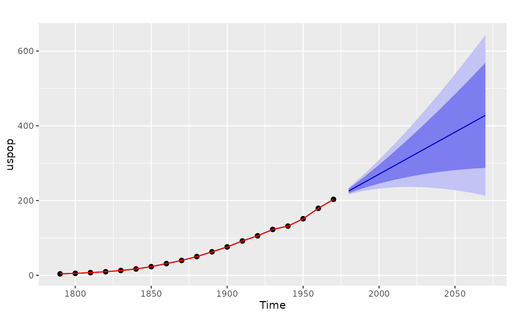

Returns local linear forecasts and prediction intervals using cubic smoothing splines estimated with spline_model().
Source: R/spline.R
forecast.spline_model.RdThe cubic smoothing spline model is equivalent to an ARIMA(0,2,2) model but with a restricted parameter space. The advantage of the spline model over the full ARIMA model is that it provides a smooth historical trend as well as a linear forecast function. Hyndman, King, Pitrun, and Billah (2002) show that the forecast performance of the method is hardly affected by the restricted parameter space.
Usage
# S3 method for class 'spline_model'
forecast(
object,
h = 10,
level = c(80, 95),
fan = FALSE,
lambda = object$lambda,
biasadj = attr(lambda, "biasadj"),
simulate = FALSE,
bootstrap = FALSE,
innov = NULL,
npaths = 5000,
...
)
splinef(
y,
h = 10,
level = c(80, 95),
fan = FALSE,
lambda = NULL,
biasadj = FALSE,
method = c("gcv", "mle"),
x = y
)Arguments
- object
An object of class
spline_model, produced usingspline_model().- h
Number of periods for forecasting. Default value is twice the largest seasonal period (for seasonal data) or ten (for non-seasonal data).
- level
Confidence levels for prediction intervals.
- fan
If
TRUE,levelis set toseq(51, 99, by = 3). This is suitable for fan plots.- lambda
Box-Cox transformation parameter. If
lambda = "auto", then a transformation is automatically selected usingBoxCox.lambda. The transformation is ignored if NULL. Otherwise, data transformed before model is estimated.- biasadj
Use adjusted back-transformed mean for Box-Cox transformations. If transformed data is used to produce forecasts and fitted values, a regular back transformation will result in median forecasts. If biasadj is
TRUE, an adjustment will be made to produce mean forecasts and fitted values.- simulate
If
TRUE, prediction intervals are produced by simulation rather than using analytic formulae. Errors are assumed to be normally distributed.- bootstrap
If
TRUE, then prediction intervals are produced by simulation using resampled errors (rather than normally distributed errors). Ignored ifinnovis notNULL.- innov
Optional matrix of future innovations to be used in simulations. Ignored if
simulate = FALSE. If provided, this overrides thebootstrapargument. The matrix should havehrows andnpathscolumns.- npaths
Number of sample paths used in computing simulated prediction intervals.
- ...
Other arguments are ignored.
- y
a numeric vector or univariate time series of class
ts- method
fitting method: maximum likelihood or minimize conditional sum-of-squares. The default (unless there are missing values) is to use conditional-sum-of-squares to find starting values, then maximum likelihood. Can be abbreviated.
- x
Deprecated. Included for backwards compatibility.
forecast class
An object of class forecast is a list usually containing at least
the following elements:
- model
A list containing information about the fitted model
- method
The name of the forecasting method as a character string
- mean
Point forecasts as a time series
- lower
Lower limits for prediction intervals
- upper
Upper limits for prediction intervals
- level
The confidence values associated with the prediction intervals
- x
The original time series.
- residuals
Residuals from the fitted model. For models with additive errors, the residuals will be x minus the fitted values.
- fitted
Fitted values (one-step forecasts)
The function summary can be used to obtain and print a summary of the
results, while the functions plot and autoplot produce plots of the forecasts and
prediction intervals. The generic accessors functions fitted.values and residuals
extract various useful features from the underlying model.
References
Hyndman, King, Pitrun and Billah (2005) Local linear forecasts using cubic smoothing splines. Australian and New Zealand Journal of Statistics, 47(1), 87-99. https://robjhyndman.com/publications/splinefcast/.
Examples
fit <- spline_model(uspop)
fcast <- forecast(fit)
autoplot(fcast)

summary(fcast)
#>
#> Forecast method: Cubic Smoothing Spline
#>
#> Model Information:
#> Cubic spline stochastic model
#> Call: spline_model(y = uspop)
#> Smoothing parameter: 0.0006859
#>
#> Error measures:
#> ME RMSE MAE MPE MAPE MASE
#> Training set 0.7704553 4.572546 3.165298 -0.6110405 8.174722 0.04536795
#> ACF1
#> Training set -0.4363661
#>
#> Forecasts:
#> Point Forecast Lo 80 Hi 80 Lo 95 Hi 95
#> 1980 225.6937 219.8454 231.5419 216.7496 234.6378
#> 1990 248.1814 233.7246 262.6382 226.0717 270.2912
#> 2000 270.6692 245.5023 295.8361 232.1798 309.1586
#> 2010 293.1569 255.5241 330.7897 235.6025 350.7113
#> 2020 315.6447 264.0068 367.2826 236.6713 394.6181
#> 2030 338.1324 271.1025 405.1624 235.6190 440.6459
#> 2040 360.6202 276.9258 444.3146 232.6206 488.6198
#> 2050 383.1080 281.5668 484.6491 227.8141 538.4018
#> 2060 405.5957 285.0989 526.0925 221.3118 589.8797
#> 2070 428.0835 287.5834 568.5835 213.2072 642.9598